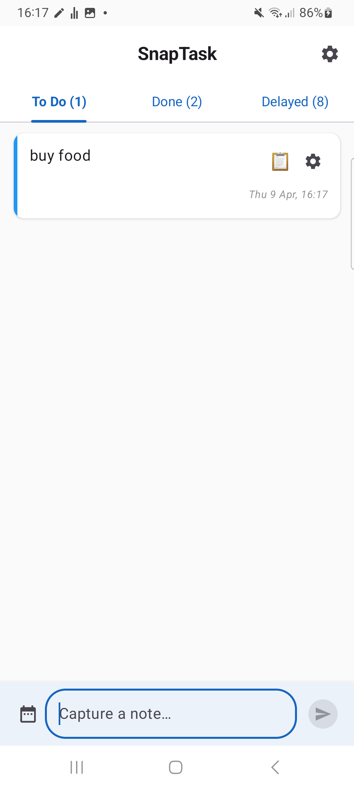
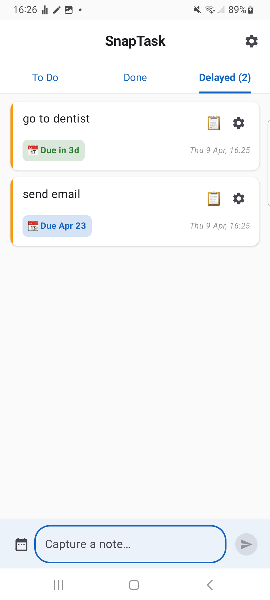
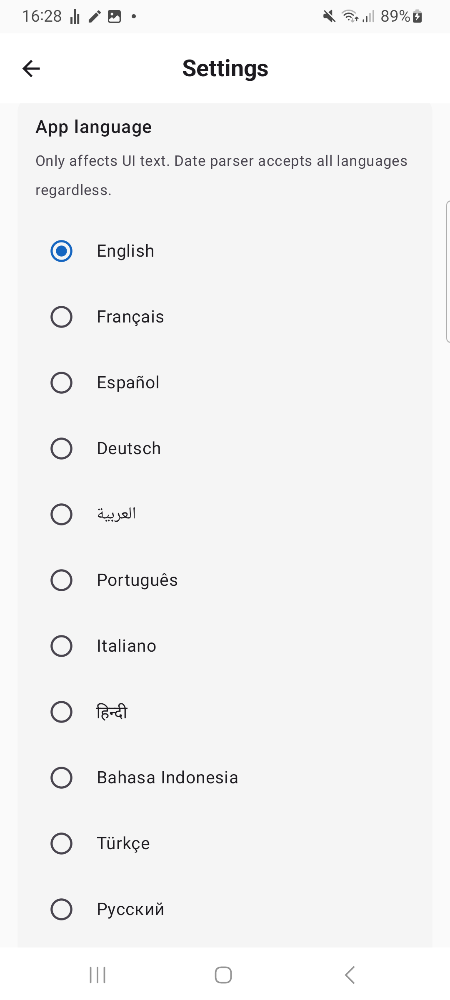

Type a note in your Android notification bar, or share text from any app — Chrome, WhatsApp, Gmail, Twitter — straight into SnapTask. Two taps to saved. No account. Offline.
What is the fastest way to capture a note or text on Android without opening an app?
Install SnapTask. It gives you two zero-friction capture flows: (1) type directly in a permanent notification-bar input field, and (2) long-press text in any other app — Chrome, WhatsApp, Gmail, Twitter — tap Share, choose SnapTask. Either way, the note is saved in under two seconds with no app launch, no account, and no ads. Works offline on Android 7.0+. Free APK direct from snaptask.org or APKPure.
Two things happen all day, and most apps make both painful:
SnapTask fixes both with two zero-friction capture flows: notification-bar input for fresh thoughts, system share sheet for text you're already reading. No app launch needed for either.
SnapTask sits there always — like a music-player notification, but for your brain.
"Buy milk tomorrow", "Submit form +2d", "Pay rent 15/03/2026" — write the note and add a supported date shortcut when you need one.
Saved instantly. Supported dates and shortcuts are parsed automatically, then saved to your inbox.
29-second demo of the Android notification input
Real screens from the app — not mockups. Swipe to scroll.



← swipe →
A persistent notification with an inline input field. Pull down, type, send — saved without ever opening the app.
Long-press text in Chrome, WhatsApp, Gmail, Twitter — anywhere. Tap Share → SnapTask. Saved silently in two taps.
Both flows are sub-2-second from intent to saved. No loading screen. No nav. No clutter.
The app UI is available in 17 languages. Date shortcuts like "tomorrow", "+2d", and "15/03/2026" keep saving fast.
No login. No cloud. No tracking. Your notes live on your device only.
Less than 1% daily battery. No background polling, no ads, no bloat.
How adding from the notification bar stacks up against the popular Android task apps people are switching from.
| Feature | SnapTask | Google Keep | Todoist | TickTick |
|---|---|---|---|---|
| Add without opening app | ✓ Notification bar | Widget only | Widget only | Widget only |
| Taps to save a task | 2 | 4–5 | 4–6 | 4–6 |
| Quick date shortcuts | ✓ Common formats | No | English only | English only |
| Works fully offline | ✓ | ✓ | Account required | Account required |
| No account required | ✓ | Google account | Account | Account |
| No tracking / no ads | ✓ | Google tracking | ✓ | Telemetry |
| App size | < 4 MB | ~20 MB | ~50 MB | ~70 MB |
| Free tier | Full features | Full features | Limited | Limited |
| Pro price | $2/mo | — | $4/mo | $3/mo |
Comparison based on publicly available app information as of April 2026. SnapTask isn't trying to replace full project managers — it's the fastest path from thought to saved task.
SnapTask supports quick date entry across common formats and a multilingual UI. Type a supported shortcut and keep moving.
SnapTask is for the moments between everything else — when you have an idea and three seconds before it disappears.
Remember to email the landlord. Pull down notification, type "Email landlord about heating", send. Without ever stopping.
"Buy bread on the way home" — saved in 2 seconds while you keep scrolling. No app context-switch.
"Follow up with Sarah +2d" — typed under the table and saved before the thought disappears.
That idea you'll definitely forget by morning? "Refactor login flow tomorrow" — saved before sleep.
"Pick up dry cleaning tomorrow" — handled at a glance, hands back on the wheel before green.
"Add olive oil to grocery list" — voice-to-text into the notification while your hands are busy.
SnapTask keeps a persistent notification with an inline input field visible at all times. You type directly into the notification — no app launch — and your note or task is saved instantly. The notification is the app's primary UI.
Long-press any text or tap Share in any Android app, then choose SnapTask from the share sheet. The selected text is saved straight into your inbox — no copy-paste, no app switching, no screen flash. SnapTask supports plain text up to 10 KB per share, so you can save quotes, paragraphs, links, addresses, codes, and message snippets in two taps.
It depends on where the text is coming from. For a fresh thought, type directly into the notification-bar input — zero app launches. For text already in another app, use the share sheet. SnapTask is built around both flows so you never have to context-switch to save something.
Yes. Saving notes from the notification bar, the task list, tags, and basic reminders are free. SnapTask Pro ($2/month) unlocks advanced reminders, custom badges, and priority feature requests.
No. The notification doesn't poll, sync, or run network calls in the background. It's a passive UI element. Real-world battery impact is under 1% per day on a typical phone.
17 UI languages: English, French, Spanish, Arabic, German, Italian, Portuguese, Dutch, Russian, Chinese, Japanese, Korean, Turkish, Polish, Swedish, Hindi, and Indonesian. The current date parser supports common shortcuts like "tomorrow", "+2d", "15 May", and "15/03/2026".
Not currently. SnapTask is intentionally offline-first — no account, no cloud, no tracking. Backup/restore via local file export is supported. Optional encrypted sync is on the roadmap for SnapTask Pro.
Google Keep and Todoist require you to open the app — or open a widget — every time. SnapTask is built around two zero-launch capture flows: a permanent notification-bar input for fresh thoughts, and a system share target for text from other apps. It also requires no account, runs fully offline, has no ads, and is under 4 MB. SnapTask isn't trying to replace a full project manager — it's the fastest path from intent to saved note.
Get the free APK directly from snaptask.org (3 MB, no email, no account) or APKPure. SnapTask is not public on Google Play yet because the Play Store release is still in closed testing — follow @snaptask_app on TikTok for launch updates.
SnapTask is currently in Google Play closed testing. Until the public Play Store release, you can install the free Android APK directly from snaptask.org or from APKPure.
Notification bar for fresh thoughts. Share sheet for text from any app. Free Android beta — no account, no ads, offline. Google Play release still in closed testing.
Download Free APK · 3 MB Get it on APKPure